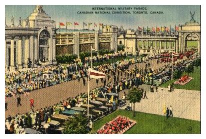

Instead of a letter, Charles sometimes sent, together in one envelope, a series of postcards that he numbered and that made up a complete set. The following card is the 3rd of a series whose other cards we do not have.
|
|

Les carte que je t’envoix j’ai achée ce-la dans les charre en menanlant et je te les envoix. Apresent jespaire que Jacqueline c’est très bien rendu a la mesont The cards I'm sending you, I bought them on the chars (the train) on my way, and I'm sending them to you. Now I hope Jacqueline got home safely. (Jacqueline had no doubt taken him to the station when he left for Kingston, where he was garrisoned.)
|